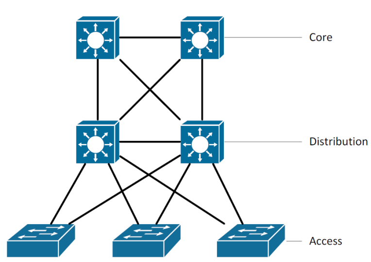
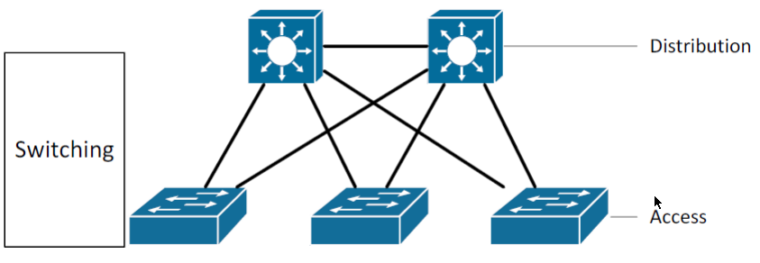

Management (správa) sítě
- je výkon funkcí požadovaných pro kontrolu, plánování, rozvržení, rozmístění, koordinaci a monitorování zdrojů sítě*
- Počáteční plánování sítě
- Konfigurace sítě a řešení závad
- Nastavení výkonu sítě a směrování provozu
- Aplikování bezpečnostních politik v síti
- Accounting v síti
- Management zátěže v síti
- Automatická detekce/prevence průniků do sítě
- Detekce a případná oprava havárií v síti
- Signalizace chybových stavů v síti
- Správa aktivních prvků v síti
- Dozor nad službami v síti
- Podpora a rozvoj systému pro management sítě
- Tvorba statistik a přehledů
NMS - Manager - Agent
- Přenos a komunikace mezi správcem sítě a agenty na jednotlivých síťových zařízeních (servery, stanice, aktivní prvky)
- Každé zařízení o sobě poskytuje informace
Agent
- Malý program, reprezentující dané zařízení, který neustále monitoruje a sbírá informace o všech dostupných funkcích a stavech daného zařízení
- Ukládá je do speciální databáze (management database)
- Veškerá komunikace mezi manažerem a agentem je vykonávána
prostřednictvím Network Management Protocol
WIFI
Wi-Fi (nebo také Wi-fi, WiFi, Wifi, wi-fi, wifi) je v informatice označení pro několik standardů IEEE 802.11 popisujících bezdrátovou komunikaci v počítačových sítích (též Wireless LAN, WLAN). Samotný název WiFi vytvořilo Wireless Ethernet Compatibility Aliance. Tato technologie využívá bezlicenčního frekvenčního pásma, proto je ideální pro budování levné, ale výkonné sítě bez nutnosti pokládky kabelů. Název původně neměl znamenat nic,[1] ale časem se z něj stala slovní hříčka wireless fidelity (bezdrátová věrnost) analogicky k Hi-Fi (high fidelity – vysoká věrnost).
S postupným růstem sítě se v ní musí nacházet více zařízení
- Proto je vhodné je rozdělit podle funkce, kterou mají v síti plnit, a organizovat je ve vrstvách
- Jisté zařízení budou sloužit k připojení koncových zařízení k síti
- Jiné, vyšší zařízení budou navzájem propojovat přístupové zařízení. Přitom mohou vykonávat bezpečnostní nebo ukončující operace
- Zařízení na vyšší úrovni budou tvořit páteř celé sítě
- Tento systém třech vrstev – přístupové, distribuční a páteřní je klasický starší trojvrstvý model sítě

Páteřní vrstva (Core)
Je obvykle směrovaná s nutností rychlé konvergence
Obsahuje redundantní spoje s dostatečnou kapacitou, zajišťuje vysokorychlostní přepínání s směrování, implementuje QoS mechanismy
- Využití směrování (L3), které garantuje topologii s využitím všech agregovaných a redundantních linek (proti L2 STP)
- Dynamické směrovací protokoly jsou preferované proti využití STP protokolu, protože tento koncept dovoluje využití konvergence a equal/unequal load balancingu skrze více cest
- Je preferované využití protokolu OSPF, díky jeho otevřenému standardu a multivendor interoperabilitě.
- Využití Layer 3 přepínačů v core vrstvě, které poskytují pokročilé služby, jež Layer 2 přepínače nepodporují
- Inter-VLAN routing
- Podpora dynamických směrovacích protokolů
- Virtualizace síťových prvků (stále proprietální technolgie Cisco Systems – VSS Virtual Switching System na Catalyst 6500)
Využití dvou rovnocenných cest každého core zařízení pro spojení s distribuční vrstvou
- 2 aktivní cesty poskytují větší šířku pásma než 1 aktivní a 1 záložní cesta (dynamic routing vs. STP)
Distribuční vrstva (Distribution)
- Je obvykle směrovaná
- Ukončuje VLANy, zajišťuje inter-VLAN routing, sumarizuje adresní rozsahy přístupové vrstvy, implementuje bezpečnostní mechanismy při komunikaci, zajišťuje QoS mechanismy
- Propojení distribučních přepínačů s vícero přepínači na přístupové vrstvě. To dovolí existenci záložních cest

Přístupová vrstva (Access)
- Obvykle přepíná, v poslední době je i směrovaná
- Zajišťuje přístup klientů do sítě, zařazení do VLAN, implementuje bezpečnostní mechanismy při přístupu a komunikaci, zajišťuje QoS mechanismy
VPN
Virtuální privátní síť (zkratka VPN, anglicky virtual private network) je v informatice prostředek k propojení několika počítačů prostřednictvím (veřejné) nedůvěryhodné počítačové sítě. Lze tak snadno dosáhnout stavu, kdy spojené počítače budou mezi sebou moci komunikovat, jako kdyby byly propojeny v rámci jediné uzavřené privátní (a tedy důvěryhodné) sítě. Při navazování spojení je totožnost obou stran ověřována pomocí digitálních certifikátů, dojde k autentizaci, veškerá komunikace je šifrována, a proto můžeme takové propojení považovat za bezpečné.
Systémy pro vzdálený přístup
Connection to a data-processing system from a remote location, for example through a virtual private network
Remote desktop software, refers to a software or an OS feature allowing applications to be run remotely on a server while being graphically displayed locally
SNMP
Simple Network Management Protocol (SNMP) je součástí sady internetových protokolů. Slouží potřebám správy sítí. Umožňuje průběžný sběr nejrůznějších dat pro potřeby správy sítě, a jejich následné vyhodnocování. Na tomto protokolu je dnes založena většina prostředků a nástrojů pro správu sítě.
Má tři verze: druhá obsahuje navíc autentizaci a třetí šifrování. Nejvíce zařízení podporuje druhou verzi.
Rozlišuje se mezi stranou monitorovanou (hlídaný systém) a monitorovací (sběrna dat). Tyto strany mohou běžet buď odděleně na různých fyzických strojích, nebo v rámci jednoho stroje. Na monitorované straně je spuštěn agent a na straně monitorovací manager. Na straně monitorované jsou operativně shromažďovány informace o stavu systému (zařízení). Manager vznáší požadavky agentovi, zpravidla na zaslání požadovaných informací (zpráv). Agent zajišťuje realizaci reakcí na požadavky managera. Získaný obsah zpráv se na straně monitorovací může dále různým způsobem zpracovávat (tabulky, grafy, …). Komunikace mezi agentem a managerem se označuje jako SNMP operace.
Na straně monitorované může existovat možnost takové konfigurace, kdy agent zašle managerovi informace (SNMP MESSAGE) automaticky bez jeho požadavku. K tomu dojde zpravidla potom, kdy byla splněna předem definovaná podmínka (výpadek, kolize, dosažení hraniční hodnoty, …), agent nečeká na odpověď. Takové konfiguraci agenta se říká SNMP TRAP (tzv. past na události).
- GetRequest
- žádost o informaci, kterou posílá Manager Agentovi, o stavu nebo hodnotě jistého objektu. („Read“)
- GetNextRequest
- žádost o další informaci v hierarchickyorganizované nižší vrstvě MIB struktury
- GetResponse
- tento příkaz je vyslán Agentem jako odpověď na příkaz GetRequest -návrat vyžádané informace
- SetRequest
- příkaz nastavuje hodnotu proměnné v MIB Agenta. („Write“). Ne všichni výrobci
- SNMP zařízení jej umožňují
- Trap
- Příkaz je vyslán Agentem Managerovi jako oznámení nějaké významné události
- Na rozdíl od předchozích příkazů, není očekávaná odpověď
- Výrobci definují vlastní Trapy, specifické pro jejich zařízení
Nástroje pro monitoring, management a analýzu počítačové sítě
Komerční řešení
- obvykle velmi nákladné
- výhodou je zajištěná podpora, upgrade a servis systému
- není třeba „rozsáhlých“ znalostí
- systém by měl automaticky zastat svěřené úkoly
- HP Openview, IBM TIVOLI
Open source řešení
- obvykle zahrnuje pouze náklady spojené s instalací a nastavením
- umožňují volitelné sestavení a konfiguraci systému
- klade řádově vyšší nároky na správce
- musí být schopen takovýto systém navrhnout a vytvořit
- často je vyčítána nedostatečná podpora plynoucí z podstaty OpenSource či vyšší závislost na správci sítě
- jedná se však o velmi oblíbené a rozšířené nástroje, které může aplikovat prakticky kdokoliv s uživatelskou znalostí Linux a Windows